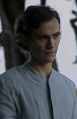

Brother Dawn
Brother Dawn es uno de los personajes principales de la serie Foundation de Apple TV +. El miembro vivo más joven de la familia clon gobernante, el hermano Dawn, es el siguiente en ser "Brother Day". Dawn es interpretada por Cooper Carter cuando era un niño y Cassian Bilton como un hombre joven.
Informacion general
Brother Dawn es el nombre que se le da al miembro más joven de la dinastía genética gobernante. El papel de Dawn es aprender de sus hermanos mayores, Day y Dusk, en preparación para el día en que tome el trono del medio y gobierne como el Cleon principal.
Cleon II ascendió al trono tras la muerte de Cleon I. El primero de los clones genéticos tomados de Cleon I, este Hermano Dawn era un bebé cuando fue puesto a cargo del Imperio Galáctico.
Como Hermano Dawn, Cleon XIII tenía siete años cuando ocurrieron los eventos que rodearon el ataque terrorista en el Puente de las Estrellas. Al aprender junto a sus hermanos, Dawn estuvo presente para la llegada de las delegaciones de Anacreonte y Thespis para lidiar con una disputa fronteriza, y fue testigo de las secuelas de la caída del Star Bridge. Cuando el hermano Day le preguntó cómo se sentía después de los ataques, Dawn admitió que estaba asustado.
Cleon XIV nació el mismo día en que Cleon XI se convirtió en Hermano Oscuridad y ascendió. Durante la ceremonia, lloró, lo que provocó que Darkness se preocupara de que algo no estaba bien con el niño. Cuando se convirtió en adulto, Dawn una vez se arrojó deliberadamente desde la ventana de su habitación, solo para ser salvado por su aura protectora. El único testigo fue un jardinero, Azura Odili.